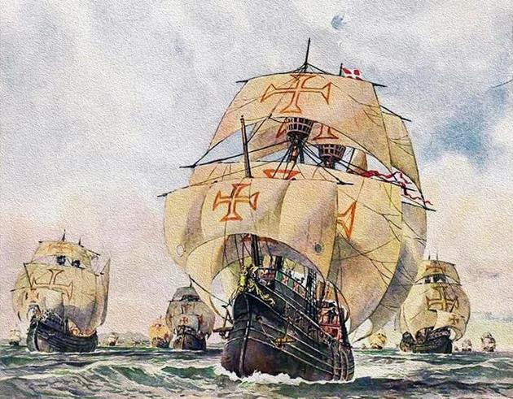

História
A história de Portugal como nação europeia remonta à Baixa Idade Média, quando o condado Portucalense se tornou autónomo do reino de Leão. Contudo a história da presença humana no território correspondente a Portugal começou muito antes. A pré-história regista os primeiros hominídeos há cerca de 500 mil anos. O território foi visitado por diversos povos: fenícios que fundaram feitorias, mais tarde substituídos por cartagineses. Povos celtas estabeleceram-se e misturaram-se com os nativos. No século III a.C. era habitado por vários povos, quando se deu a invasão romana da Península Ibérica. A romanização deixou marcas duradouras na língua, na lei e na religião. Com o declínio do Império Romano, foi ocupado por povos germânicos e depois por muçulmanos (mouros e alguns árabes), enquanto que os cristãos se recolhiam a norte, nas Astúrias.
Em 1139, durante a Reconquista cristã, foi fundado o Reino de Portugal a partir do condado Portucalense, nascido entre os rios Minho e Douro. A estabilização das suas fronteiras em 1297 tornou Portugal o país europeu com as fronteiras mais antigas. Como pioneiro da exploração marítima na Era dos Descobrimentos, o reino de Portugal expandiu os seus territórios entre os séculos XV e XVI, estabelecendo o primeiro império global da história, com possessões em África, na América do Sul, na Ásia e na Oceania.
1580, uma crise de sucessão resultou na União Ibérica com Espanha. Sem autonomia para defender as suas posses ultramarinas face à ofensiva holandesa, o reino perdeu muita da sua riqueza e estatuto. Em 1640, foi restaurada a independência sob a nova dinastia de Bragança.
